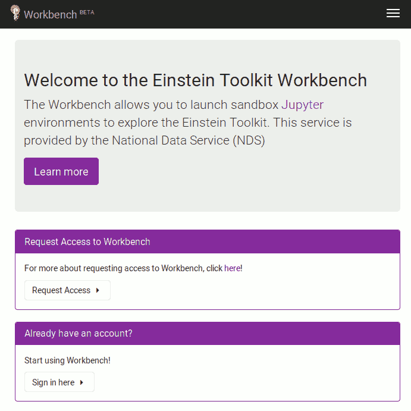
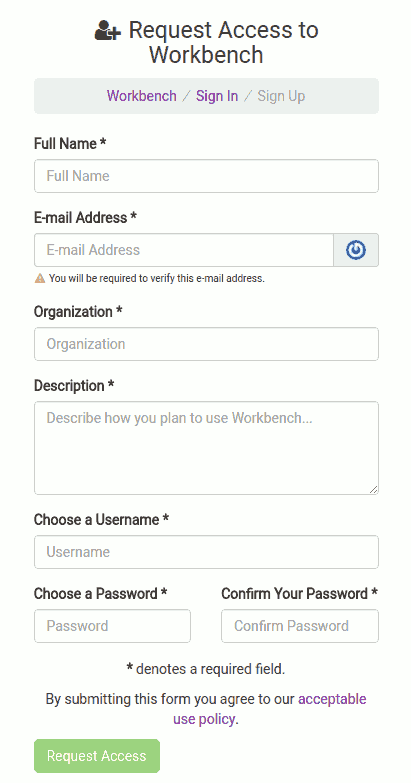
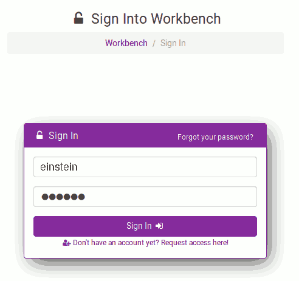
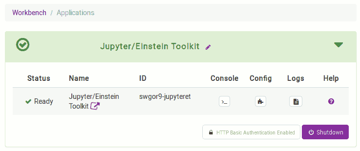

Tutorial for New Users
Here you will find a step by step guide to downloading, configuring, and running the Einstein Toolkit. The tutorial uses an web-based interface using jupyter notebooks, so no software needs to be installed on your own computer. If you find something that does not work, please email users@einsteintoolkit.org.
Offline usage
If, instead of using the web-based service, you would rather like to run the tutorial on your own laptop, then please use a read only version of the notebook here instead. This read only copy is currently experimentalGetting an account (in 5 minutes of time)
Before you can get started you will require and account on the tutorial
server, which is hosted by the National Data Service.
Please go to
https://www.einsteintoolkit.nationaldataservice.org
and click on "Request Access".

Fill out the "Request Access" form and click "Request Access" once more

which will ask you to confirm your email address:
 .
.
Once your email is confirmed an adminstrator has to accept your access request, please allow for 1 business day for this to happen. Once the account is approved you will receive an email from "Labs Workbench Support" with subject "Account approved". NOTE Accounts (and the data in them) will be deleted after prolonged inactivity. Please make sure to download your data before that.
Right now unfortunately there is no option for them to download a directory as a zip file so you may have to create zip file manually first.
Starting the jupyter notebook
Once you account is approved, go back to https://www.einsteintoolkit.nationaldataservice.org this time clicking on "Sign in here" or use the link in the approval email both of which will bring you to the login page..
Once logged in you will see the list of avaialble applications
 .
.
where you should click on "Add" for the "Jupyter/Einstein Toolkit" application. This will add the application to your account and bring you to a page listing all of your applications.
At this point the application has not been started yet ("Stopped" in
the first column of the table) and you must click on "Launch" to start
it. Please do so now.

While the image is starting the screen will turn yellow and a spinning
icon will be shown. Please be patient, since starting up the
application can take several minutes.

Once the application has fully started up, the screen will turn green
and a small icon appears next to "Jupyter/Einstein Toolkit" in the
second column. Click on in now to go to the jupyter notebook server.
You will be ask to authenticate with your workbench username and
password.


You will be presented with a view of the directories avaialbe inside of
the application, which in this case is just a single directory called
"work".

Please navigate inside of the "work" directory by clicking on it, which
will show its content, which is a single file "CactusTutorial.ipynb".

Click on the file and you will be brought to the actual jupyter
notebook. From this point on, please follow the instructions in the
notebook.